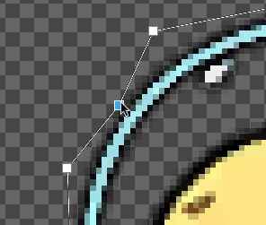
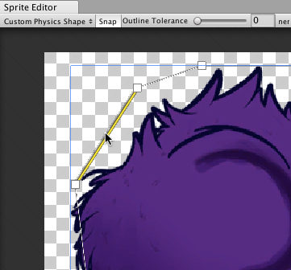
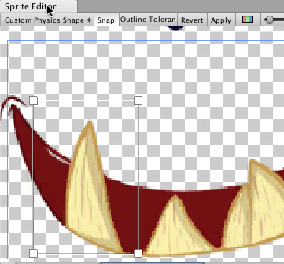
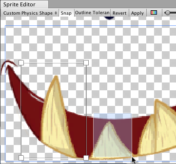

Sprite Editor: Custom Physics Shape
概述
The Sprite Editor’s Custom Physics Shape allows you to edit a Sprite’s Physics Shape, which defines the initial shape of the Sprite’s Collider 2D Mesh. You can further refine the Physics Shape through the Collider’s component settings.
To edit a Sprite’s Physics Shape:
In the Project window, select the Sprite that you want to change.
In the Inspector window, click the Sprite Editor button.
In the Sprite Editor window, select the top left drop-down menu and choose Custom Physics Shape.

属性
| 属性 | 功能 |
|---|---|
| Snap | Snap control points to the nearest pixel. |
| Outline Tolerance | Use this to control how tightly the generated outline follows the outline of the Sprite texture. At the minimum value (0), the Sprite Editor generates a basic outline around the Sprite. At the maximum value (1), the Sprite Editor generates an outline that follows the pixel outline of the Sprite as closely as it can. |
| Generate | Click to automatically create a physics shape outline. |
Standard workflow
First open the Sprite Editor for your selected Sprite. Then, select Custom Physics Shape from the upper-left drop-down menu in the editor.
Then click Generate to create an outline of the Physics Shape. Unity generates an outline follows the shape of the original Sprite texture by default, and takes into account transparent areas as well.
Adjust the Outline Tolerance slider to refine the outline of the Physics Shape. After adjusting the Outline Tolerance value, click Generate to refresh the outline.
Click and drag each control point to refine the outline of the Physics Shape. To remove a control point, select a control point and press the Command+Del/Del keys.

When the mouse is hovering over the outline, a transparent control point appears along the edge. Click to create a new control point at that spot. Remove a control point by selecting it and pressing the Del/Command+Del keys.
 |
 |
| Fig.1: Transparent control point. | Fig.2: Click to create new control point. |
Click and drag over an area to select multiple control points. You can position or delete them altogether while selected.

Holding the Control/Ctrl key allows you to select edges instead of their control points. Click on the highlighted edge to drag them into a new position.
|  |  |
| Fig.1: Select the edge of the outline. | Fig.2: Drag and move the edge freely once selected. |
Working With Multiple Outlines
A single Physics Shape can contain multiple separate outlines. This is useful if only specific areas of a Sprite need a Collider 2D Mesh for collision. For example, you might want a character to only respond to collisions on specific areas of its Sprite for damage as part of the game mechanics.
Click and drag over any empty space in the Sprite Editor window to create a new rectangular outline with 4 control points. Repeat this step to create additional outlines. You can refine each outline in the same way you would for a single Physics Shape outline.
 |
 |
| Fig. 1: Click and drag to create 4-point box. | Fig. 2: Box physics shape with 4 control points. |
|  |  |
| Fig. 3: Click and drag again for another box. | Fig. 4: Repeat to create more separate outlines. |
Additional tips
If you have edited the outline of a Sprite that existing GameObjects already refer to, right-click the title of the Collider 2D component and select Reset. This updates the shape of the Collider 2D Meshes.

2018–05–24 Page published with editorial review